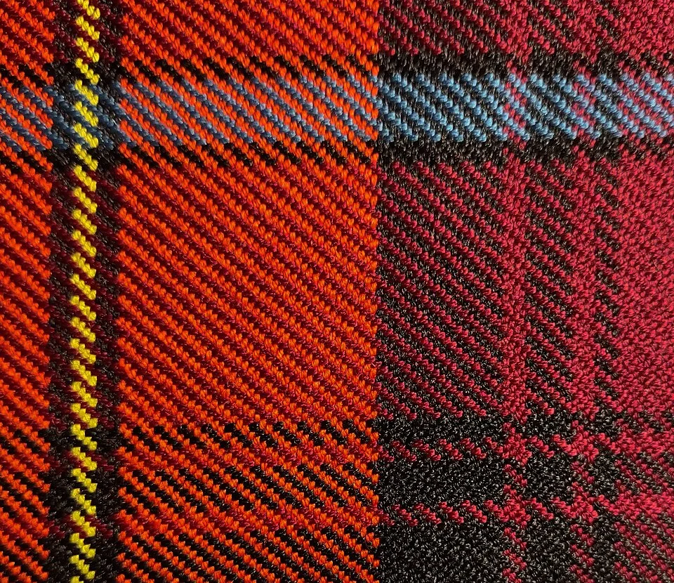

Dila’nın kumaş atölyesi
Dokuyu yakından gör.
Gerçek bir kumaş fotoğrafına yaklaş. Sonra rüzgârı ve ışığı değiştir.
Kumaşı 360° çevir
Atölye ve galeri
- Dila’nın saten sahnesiSatenin açısını, dalgasını ve ışığını değiştir.
- Lif Atölyesiİplik, dokuma ve numuneyi karşılaştır.
- Hareket AtölyesiKumaşın hareketini kısa deneylerde gör.
- Dila FilmleriAtölye ve galeri filmlerini izle.
- Renk ve provaKumaş ve renk seçerek Dila ile prova yap.
- Dokuma numunesiÜç numunenin nerede işe yaradığını öğren.